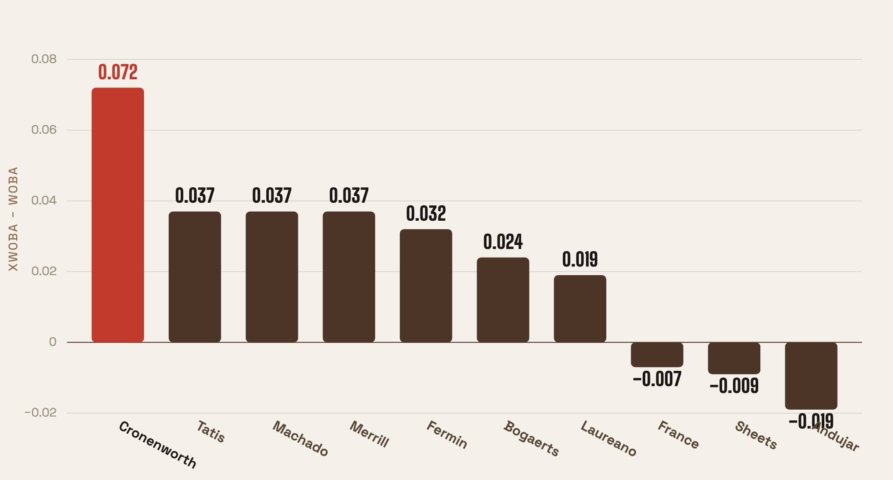

Jake Cronenworth is hitting .198. You probably know this. You’ve maybe used words like “washed” or “lineup black hole.” The hits aren’t coming, the line looks ugly, and it’s been going on long enough that patience is running thin.
The problem is that Cronenworth’s contact doesn’t agree.
Strip out where the fielders happened to be, strip out the balls that caught a bad hop or died on the warning track, and look only at the quality of what he’s actually hitting — the exit velocity, the launch angle, the physics of the batted ball — and you get a number that says he’s been hitting like a .304 hitter. Not great. But not .198.
That gap is the story of the 2026 Padres offense.
What xwOBA is and why it matters
Before going further: xwOBA (pronounced “expected woba”) measures what a hitter’s results should look like based purely on contact quality. Every batted ball gets a probability attached to it — a 105 mph line drive to left-center has a high expected value; a 72 mph weak grounder to short has a low one. Add those up across a season and you have a baseline stripped of fielding luck, park effects, and random sequencing.
A player’s wOBA and his xwOBA don’t have to match. In any given stretch, a ball can find a gap or find a glove regardless of how hard it was hit. But over enough plate appearances, they tend to converge. Large gaps are more likely to close than to persist.
Cronenworth’s gap right now — +.072 — is enormous. The league average gap in 2026 is essentially zero (.319 xwOBA, .317 wOBA). He’s not just unlucky; he’s in the tail of the distribution.
The whole lineup is running this way
What makes this worth writing about: it’s not just Cronenworth. Six of the ten Padres regulars with 80 or more plate appearances are running positive gaps — meaning their contact quality is outpacing their results.

Tatis, Machado, and Merrill are all sitting at +.037. That’s not a rounding error; it’s a real, systematic drain on the offense. Machado’s line reads .270. His contact says .307. The Padres version of Manny Machado has been quietly walking into the box and hitting the ball well; the scoreboard just hasn’t been cooperating at the rate the contact deserves.
Bogaerts (+.024) and Laureano (+.019) are running similar quiet deficits. Put it together and you have a lineup where nearly every bat has been a little snakebitten, a little overdue.
| Player | PA | wOBA | xwOBA | Gap |
|---|---|---|---|---|
| Cronenworth | 114.0 | .232 | .304 | +.072 |
| Tatis Jr. | 314.0 | .314 | .351 | +.037 |
| Machado | 296.0 | .270 | .307 | +.037 |
| Merrill | 294.0 | .280 | .317 | +.037 |
| Fermin | 142.0 | .234 | .266 | +.032 |
| Bogaerts | 274.0 | .293 | .317 | +.024 |
| Laureano | 206.0 | .293 | .312 | +.019 |
| France | 154.0 | .315 | .308 | −.007 |
| Sheets | 241.0 | .333 | .324 | −.009 |
| Andujar | 198.0 | .304 | .285 | −.019 |
The counterpoint: Sheets is on the other side
Gavin Sheets is hitting .290-something and you feel good about it. His xwOBA says pump the brakes: at −.009, his results have been slightly better than his contact warrants. The gap is small enough that you shouldn’t panic, but it’s a flag. What Sheets has done this year is real — his contact quality is genuinely above-average — but the exact line he’s posted has had some favorable sequencing baked in.
Andujar (−.019) is the cleaner case of outrunning contact. The results look serviceable. The underlying contact is shakier.
What to do with this
None of this guarantees the offense turns a corner. Large positive luck gaps can close in two directions: results come up to meet the contact quality, or the contact quality falls to meet the results. Cronenworth’s track record suggests the former is more likely — he hasn’t forgotten how to make contact — but individual streaks are not regressions, and the schedule doesn’t care about sample sizes.
What the xwOBA picture does tell you is that this offense has been worse than the contact deserves. When six regulars are underperforming their batted-ball quality simultaneously, some of it is going to revert. The question is whether it happens in time to matter.
The math says this team hits better than .270. The calendar will eventually catch up with the math.
Data: Baseball Savant, through June 21, 2026. Minimum 80 plate appearances. xwOBA uses Statcast’s estimated wOBA from launch speed and angle, independent of fielder positioning.